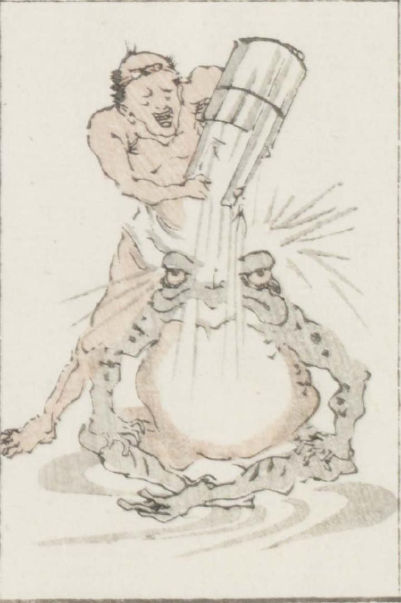

胡座をかいて座った大きな蝦蟇蛙に、褌姿で立った男が後ろから桶の水を浴びせている。
著作者：牧墨僊／出典：親書誌：U426_nichibunken_0097：滑稽洒落狂画苑；コッケイシャレキョウガエン／日付：2007／資源識別子：U426_nichibunken_0097_0039_0000
Copyright (c)2010- International Research Center for Japanese Studies, Kyoto, Japan. All rights reserved.